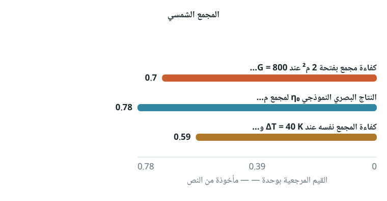

المجمع الشمسي
Solar Collector
جهاز يمتص الإشعاع الشمسي ويحوّله حرارةً في سائل ناقل؛ كفاءته η = Q_u/(A·G)، فمجمع بفتحة 2 م² عند 800 W/m² ينتزع 1120 W بكفاءة 0.70.
المجمع الشمسي مبادل يحوّل الإشعاع الشمسي إلى حرارة في سائل ناقل، ويقاس أداؤه بكفاءة لحظية هي نسبة القدرة الحرارية المنتزعة إلى القدرة الشمسية الساقطة على فتحته: η = Q_u/(A·G). أنواعه الرئيسة ثلاثة: الصفيحي المسطح للاستخدام المنخفض الحرارة، والأنبوبي المفرغ الذي يقلّل الفقد بالحمل، والمركّز الذي يضاعف الإشعاع على مستقبل ضيق ويعمل بالإشعاع المباشر لا المنتشر. ومعيار الاختبار يثبّت الشروط: ISO 9806 يقيس الكفاءة عند إشعاع وحرارة محيط ومعدل تدفق وفرق حرارة معلومة، فنقل رقم كفاءة بلا ظرفه ينقل رقمًا بلا معنى. والفرق الجوهري عن اللوح الكهروضوئي أن المخرج حرارة لا كهرباء: المجمع الجيد ينتزع نحو 70% من الإشعاع الساقط حرارةً، بينما يقف اللوح التجاري عند نحو 20% كهرباء لأن حدّ شوكلي يمنع أكثر، والباقي حرارة تصرفه الألواح.
كيف تعمل الظاهرة؟
الامتصاص يبدأ بطبقة انتقائية على السطح الماص: امتصاصية α نحو 0.95 في الطيف الشمسي وانبعاثية ε نحو 0.05 في الأشعة تحت الحمراء، فالطبقة تمتص الضوء القصير ولا تشعّ طويلًا. ينتقل ما امتُص إلى السائل عبر أنابيب أو قنوات ملحومة بالسطح الماص، ويُنتزع بالحمل القسري بمضخة أو بالحمل الطبيعي في الدورة الثرموسيفونية. الفقد ثلاثة: بصري بانعكاس الغطاء الزجاجي وامتصاصه (نتاج τα في حدود 0.78)، وحمل حراري من السطح إلى الهواء عبر فرق الحرارة، وإشعاع من السطح. مع ارتفاع حرارة السائل يقترب الكسب من الفقد فتنخفض الكفاءة، وتنعدم عند حرارة الركود التي يصنعها المجمع حين يتوقف التدفق، وهي حالة تُقاس لا تُخمَّن.
العلاقة بالأرقام
الكفاءة η = Q_u/(A·G). مثال: A = 2 م²، G = 800 W/m²، فالقدرة الساقطة A·G = 1600 W؛ وإذا انتزع السائل Q_u = 1120 W فالكفاءة η = 1120 ÷ 1600 = 0.70. وبتفصيل الفقد: η = η₀ − a₁·ΔT/G − a₂·(ΔT)²/G، وبأخذ η₀ = 0.78 وa₁ = 3.8 W/(m²·K) وΔT = 40 K عند G = 800 W/m² يكون a₁ΔT/G = 3.8 × 40 ÷ 800 = 0.19، فتكون η = 0.78 − 0.19 = 0.59 وQ_u = 0.59 × 1600 = 944 W. وعلى ست ساعات إشعاع فعلي تُنتج هذه المساحة 944 × 6 = 5.66 kWh يوميًا، ولتغطية 10 kWh يلزم 10 ÷ 5.66 × 2 = 3.53 م². والفرق بين الكفاءتين (0.70 مقابل 0.59) ليس خطأ قياس بل أثر ΔT = 40 K في معامل الفقد.
مفاهيم متقاربة
المجمع الحراري يختلف عن اللوح الكهروضوئي في المخرج لا في الوسيط: كلاهما يعرض سطحًا للشمس، لكن الأول ينتج حرارة عند كفاءة تصل إلى 0.7 والثاني كهرباء عند نحو 0.2. ويختلف عن المبادل الحراري العادي بأن دخله إشعاع لا سائل ساخن، فحساب أدائه يقوم على A·G لا على فرق حرارة بين تيارين. ويختلف عن المركّز ذي المستقبل المركزي بأن المستقبل قد يكون بعيدًا عن العاكس، فيكون العاكس مكوّنًا لا مجمعًا. ولا يُقاس المجمع بكفاءة واحدة: الكفاءة دالة لفرق الحرارة، فرقم بلا ΔT وG ليس صفة للجهاز بل لحالة تشغيل.
حدود التطبيق
بلا إشعاع مباشر كافٍ لا يعمل المركّز أصلًا، والإشعاع المنتشر يجعل الكفاءة المعلنة بلا معنى عملي. وعند ارتفاع حرارة الدخول تقترب الكفاءة من الصفر ثم تصير سالبة إن بُرّد السائل بالمجمع، ولهذا تُركّب حماية من التجمد والغليان. وأرقام الكفاءة مشروطة بإشعاع وفرق حرارة ومعدل تدفق، فلا تُقارن بين مجمعين إلا عند الظرف نفسه كما يحدده ISO 9806. كما تتدهور الطبقة الانتقائية والتفريغ مع الزمن، فالكفاءة الاسمية ليست الكفاءة بعد عشر سنوات. وحدّ الطاقة النهائي من القانون الثاني: لا ينتزع المجمع حرارة أعلى من حرارة الركود، وهي سقف لا يُتجاوز بتحسين السطح وحده.

| الكمية | القيمة | المصدر |
|---|---|---|
| كفاءة مجمع بفتحة 2 م² عند G = 800 W/m² وQ_u = 1120 W | 0.70 — | [1] |
| النتاج البصري النموذجي η₀ لمجمع مسطح مغطّى | 0.78 — | [2] |
| معامل الفقد الحراري a₁ | 3.8 W/(m²·K) | [2] |
| كفاءة المجمع نفسه عند ΔT = 40 K وG = 800 W/m² | 0.59 — | [2] |
| الطاقة اليومية لنفس المجمع | 5.66 kWh | [2] |
المصادر
- 1 ISO 9806:2017 — Solar energy — Solar thermal collectors — Test methods — International Organization for Standardization (2017). · اطُّلع عليه 2026-11-26
- 2 Solar Engineering of Thermal Processes, 4th ed. (Duffie & Beckman) — Wiley (2013). openlibrary.org/api/books?bibkeys=ISBN:9780470873663&format=json&jscmd=data · اطُّلع عليه 2026-11-26
استشهد بهذا المصطلح
الصيغتان مبنيتان من بيانات الصفحة نفسها: العنوان والتاريخ ورابط النسخة المنشورة.
المجمع الشمسي — Solar Collector. (2026). ديوان المعرفة — انفراد. https://infiradev.com/diwan/terms/term-solar-collector.html
@misc{term-solar-collector2026,
title = {المجمع الشمسي},
titleaddon = {Solar Collector},
howpublished = {{ديوان المعرفة — انفراد} — مرجع علمي عربي},
year = {2026},
url = {https://infiradev.com/diwan/terms/term-solar-collector.html},
urldate = {2026-11-26},
note = {مراجعة علمية: hermes — مراجعة آلية بالتكليف 2026-11-26}
}
راجعه: hermes — مراجعة آلية بالتكليف 2026-11-26 · 2026-11-26 · آخر تحديث 2026-11-26